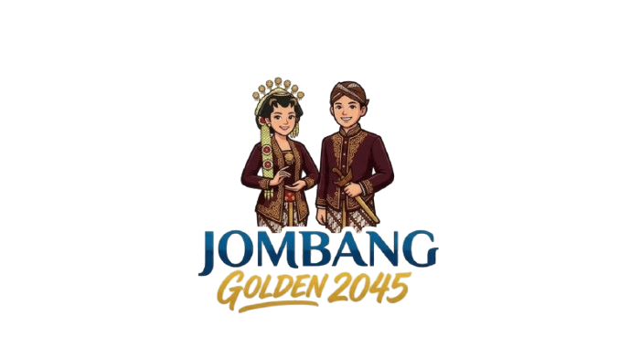

Jombang Heritage
Cultural Showcase
Jombang Regency carries a rich cultural heritage reflecting ancestral values, community creativity, and the enduring identity of East Java — presented here with world-class elegance for international audiences.

The culture of Jombang reflects religious values, local traditions, agrarian community life, and a strong spirit of togetherness that continues to endure through generations.

The people of Jombang preserve a variety of local traditions passed down through generations as an essential part of regional identity.

Regional arts serve as cultural expression, showcasing aesthetic value, social harmony, and the richness of local traditions.

Cultural life is visible in everyday customs, traditional ceremonies, and the enduring spirit of mutual cooperation.
Jombang's batik reflects local creativity in transforming motifs, colors, and philosophy into textile art with profound cultural significance.

Motifs inspired by nature, regional history, and cultural elements that define the local community's unique identity.

A combination of shapes, patterns, and colors presenting regional character in an elegant artistic form.
A cultural product and symbol of local creativity, ready to be introduced on the global stage.
Traditional attire reflects beauty, moral values, and symbolic dignity in communities that continue to honor ancestral heritage.

Representing Javanese cultural identity, emphasizing modesty, elegance, and customary values.

Accessories complementing ceremonial dress, carrying symbolic meanings related to role and cultural significance.

Attire presented in cultural events, artistic performances, and ceremonies as part of cultural preservation.
Jombang is not only renowned as a religious center, but as a region with remarkable cultural wealth — through art, batik, traditions, architecture, music, and culinary heritage.
Traditional houses reflect ways of life, communal values, and architectural philosophies connected to the environment and cultural wisdom.

Distinctive building forms reflecting function, aesthetics, and cultural values of Javanese society.

Spatial arrangement carrying philosophical meaning related to family life and social harmony.

A legacy demonstrating local communities' ability to create culturally meaningful dwellings.
Traditional songs serve as a medium for expressing life values and the sense of togetherness that grows within a community across generations.

Cultural expression passed down orally, used in social, educational, and ceremonial activities.

Traditional music reflects community identity and preserves local cultural values across generations.

Songs and music forming part of performing arts, strengthening the cultural appeal of the region.
Jombang's traditional cuisine reflects local flavors, community habits, and the uniqueness of regional gastronomy.

A blend of taste, local ingredients, and eating habits developed over time within the community.

Local taste is the main attraction of Jombang's cuisine, offering an authentic experience rooted in regional tradition.

Traditional food promoted as gastronomic heritage, supporting tourism and strengthening cultural pride.